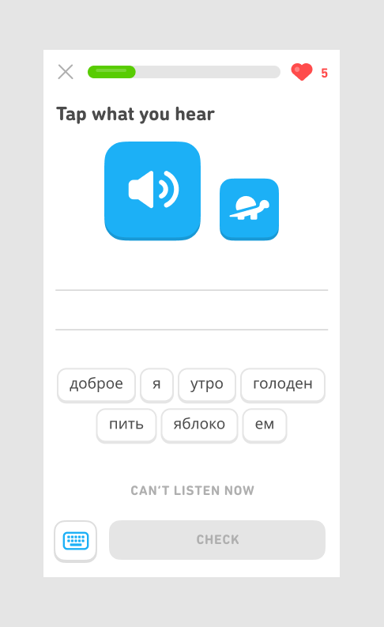

When designing a feature, it's important to allow users to undo potentially disruptive actions. For instance, if a user accidentally deletes a file, they should be able to retrieve it from the trash bin. This allows users to feel more comfortable in their use of the product, as they know they can fix mistakes without losing valuable work or information.
On Duolingo, when learners hit the X button in a lesson, they are shown a drawer that asks them to confirm that they would like to quit. This is helpful for learners who may tap the X button accidentally. Ending a lesson causes you to lose progress, so it could be very frustrating and disruptive to end it by mistake. The red “END LESSON” copy further emphasizes that they're about to take a potentially disruptive action.

Tap exercises are another example of how we allow learners to undo disruptive actions. For instance, users can undo the selection of tap tokens or reorder tokens they've already selected. Furthermore, learners can both select and drag tokens, which creates a more seamless UX – the user is not making a “mistake”, no matter how they interpret the usability of the tokens.